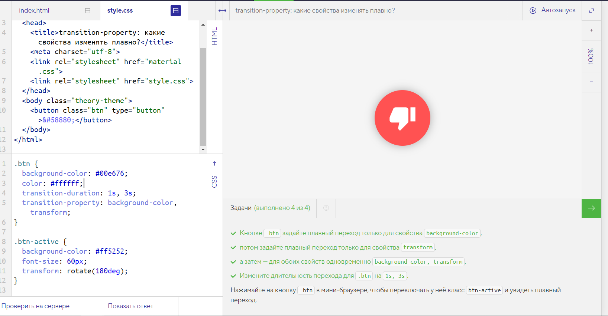

transition-property: какие свойства изменять плавно?Такое поведение соответствует значению all свойства transition-property, это значение по умолчанию.
Такое поведение часто нежелательно, особенно когда в правиле много свойств.
Можно указать, какие именно свойства нужно изменять плавно, перечислив их в transition-property через запятую:
transition-property: width; // плавно меняется только ширина
transition-property: width, height; // плавно меняются ширина и высота
При этом так же через запятую можно задавать переходам разных свойств разную длительность:
transition-property: width, height;
transition-duration: 1s, 5s; // ширина меняется за 1 секунду, высота за 5
Попробуем применить описанное свойство на практике. В этом примере у кнопки анимируются свойства background-color, transform и font-size.
.btn задайте плавный переход только для свойства background-color
transform
background-color, transform
.btn на 1s, 3s
.btn в мини-браузере, чтобы переключать у неё класс btn-active и увидеть плавный переход.
.btn {
background-color: #00e676;
color: #ffffff;
transition-duration: 1s, 3s;
transition-property: background-color, transform;
}
.btn-active {
background-color: #ff5252;
font-size: 60px;
transform: rotate(180deg);
}
